Overview
After configuring and logging to ProcessMaker, this page explain how you can interact with, and use the case list in the ProcessMaker Mobile app, as well as go over several other options that are available when running a case in the app.
To know the features in this page when running a case, see Run a Case.
 Start a New Case
Start a New Case
The ProcessMaker Mobile app allows you to create a case of a process previously created in the ProcessMaker web edition at any time. The New Case list displays all starting tasks that you have been previously assigned to participate in. To start a case, follow the next steps:
Tap the + icon located at the bottom of the screen. This icon displays in every screen of the ProcessMaker Mobile interface except when running a case.
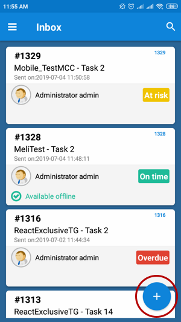
All of your available starting tasks of processes are listed on the screen. Tap a specific task to start a case or search for a process and then choose the desired task.

The Case Tabs displays the main case view by default where a Dynaform opens automatically for you to work on and to submit as you do it in the ProcessMaker Web edition.
Note: The Output Document, Input Document, and External Step features are not available for ProcessMaker Mobile as step: they will not open or create the case if any of those features are on the first task of the display list. The following alert message displays “You can’t do this task in the mobile edition. Please login using the web edition.”

If a process has a Dynaform, then any of the mentioned features follows as a step on the display list, the ProcessMaker Mobile version skips that part and continues with the process. These features will be implemented in future versions.
Search Processes and Cases
The ProcessMaker Mobile app allows you to search processes when you are starting a case or using some tray in the cases list. To search for a process or a case, follow the next steps:
Start a new case or in the case list, go to a tray.
Each tray screen and the New Case screen display the magnifying glass icon located at the top-right side of the screen. Tap this icon.

In a cases list, the search for... field is found next to the
 icon.
icon.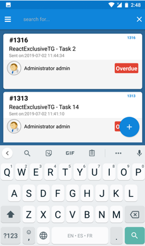
In case that you are searching for a process when starting a new case, the search field is found below the magnifying glass icon.

In the search field, type the text you want to search. You can search cases (in case that you are in the case list screen) and processes (in case that you are starting a case screen) by the process name or the task name. You can even search a case in some case list by typing the case number. If you are searching for some text in a case list, after typing it, then type Enter.
The cases are filtered based on the search input.

In case that you are starting a new case, the process tasks are filtered.

Use the Case List
You can work on your cases directly from the ProcessMaker Mobile app through the cases list. In this section you will see how to use the case list, as well as several other options when running a case on ProcessMaker Mobile. To access the Case List, follow the next steps:
Tap the three horizontal lines icon or slide the screen to the right.

To the left side of the screen, a menu displays the case list in the first section. Access a tray by tapping one.

The left menu displays the following trays:
Each one is described in the following sections.
 Inbox
Inbox
The Inbox panel lists all the cases assigned to you. The cases are sorted first by their case number, and then by the name of the case. The list displays cases with one of the following tree case statuses: On time, At risk or Overdue. Cases that can be worked offline are marked with the label "Available Offline." To learn more about offline cases, see Processmaker Offline Mobile.
To start working on a case, tap the desired case or you can first search for a case and after that tap a case.
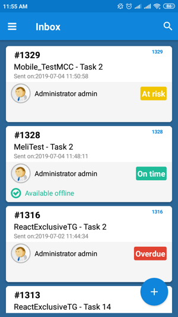
The Case Tabs displays the main case view by default where a Dynaform opens automatically for you to work on and to submit as you do it in the ProcessMaker Web edition.

To learn other options in the Case Tabs, see The Case Tabs.
 Unassigned
Unassigned
The Unassigned panel displays all cases that can be claimed by a pool of users assigned to the task. You can assign yourself a task, which then removes it from the Unassigned panel. When there are cases in the Unassigned tray, then anyone can claim the case to work on it. The list displays cases with one of the following three case statuses: On time, At risk or Overdue.
To start working on an unassigned case, tap the desired case or you can first search for a case and then tap the desired case.

As of ProcessMaker Mobile 2.0.5, the Unassigned case tray no longer displays the due date case statuses (On time, At risk or Overdue).

The Case Tabs displays the main case view by default where a case summary displays details about the unassigned case, details like status, date, description and more. At the end of the case summary, you can tap CLAIM THIS CASE to assign the case to yourself and to start working on it.

To learn other options in the Case Tabs, see The Case Tabs.
 Participated
Participated
The Participated panel lists all the cases that you have sent or participated in. The list displays cases with one of the following three case statuses: On time, At risk or Overdue.
To view a participated case, tap the desired case or you can first search for a case and then tap the desired case.

As of ProcessMaker Mobile 2.0.5, the Participated case tray no longer displays the due date case statuses (On time, At risk or Overdue).

The Case Tabs displays the main case view by default where the case summary displays details about the case like the status, date, description and more.
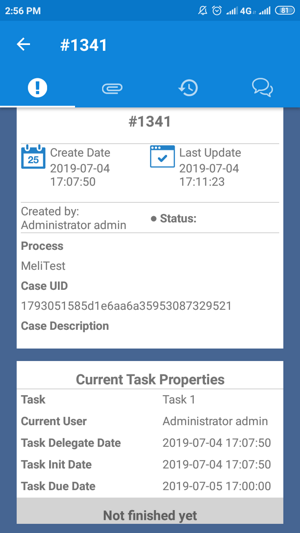
To learn other options, see The Case Tabs.
 Draft
Draft
The Draft panel includes cases that are being created but have not been submitted to the next task yet. Cases are considered to be in Draft status after you edit the case data by submitting a Dynaform or after moving on to a subsequent step in the current task. The list displays cases with one of the following three case statuses: On time, At risk or Overdue.
To start working on a draft case, tap the desired case or you can first search for a case and then tap the desired case.

The Case Tabs displays the main case view by default where a Dynaform opens automatically for you to work on and to submit as you do it in the ProcessMaker Web edition.
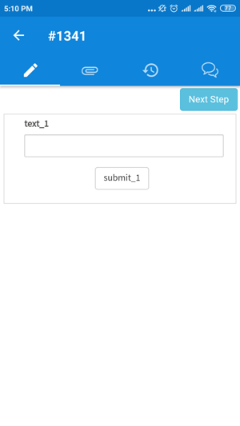
To learn other options, see The Case Tabs.
The Case Tabs
Available Version: As of ProcessMaker Mobile 2.0.1.
When running a case, below the case title, navigation tabs display where you can easily access all information about the case like documents uploaded and generated, case history, and case notes. To view the Case Tabs, open a case from the case list or start a new case. The Case Tabs displays the following tabs:

The Main Case View
This panel displays information about the case to work on it. This tab could vary depending on which place it was accessed from. The behavior of this tab vary according to the following:
- If the case has been accessed when creating a case, from the Inbox or the Draft tray, the main case view displays the case steps.
- If the case has been accessed from the Participated tray, the main case view displays the case summary and the current task properties.

- If the case has been accessed from the Unassigned tray, the main case view displays the case summary, the current task properties and also the Claim this case button at the end of the screen.
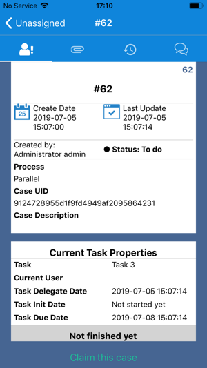
Files Attached
Available Version: As of ProcessMaker Mobile 2.0.1.
The Files Attached panel lists documents uploaded and generated when the case was running in the ProcessMaker Web edition. In ProcessMaker Mobile, to see this option when running a case in the Case Tabs, tap the Clip tab.
The Files Attached panel has two subsections that can be stretched by taping the arrow icon located at the top-right of each section. One section lists the uploaded documents and the other section lists the generated documents. You can download files with the relevant permission assigned.

Where each document displays the following information:
- File name
- Type: The title of the Input or Output Document associated to the file. Otherwise, if the file is not related to an Input or Output Document, it displays as an Attachment
- Version: The latest file version
- Created On: When the file was uploaded
- Created By: The user who uploaded the file
The Case History
This panel displays the case history. To see this option when running a case, in the Case Tabs, tap the Clock with Arrow tab.
Each history record includes the task name, the status, the people assigned to the task, the date and the time when the status changed.

The Case Notes
This panel lists the case notes. To see this option when running a case, in the Case Tabs, tap the Bubbles tab.
Each case note includes the note text, the people who wrote the note, the date and the time when the note was written.

If the case is in the Inbox, Draft tray or creating a case, and the case has the relevant permission, you can add a note by following the next steps:
In the Case Note panel, tap the + icon located at the top-right side of the screen.
The Add note window displays. Type your note.
If you want to send an email notification, check Send mail.
Tap POST to publish the note. Otherwise, tap CANCEL to exit.
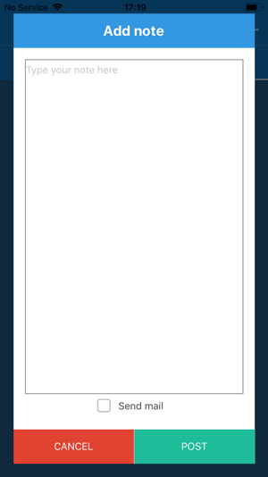
Additional Options
Besides the Case List, there are also a few more options to consider, such as:
Tap an option.
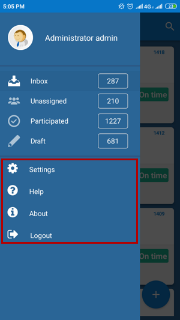
Settings
The Settings option displays the endpoint configuration, where you can interact with the following options:
- Server URL
- Workspace
- Clean Cache
- Enable external libraries cache
- Language
- Synchronize cases and tables

Tap an option to edit a setting.
Server URL
As a part of the server configuration, in the current field, type the ProcessMaker URL server such as http://192.168.1.1 or http://pm.example.com. Then, tap OK.

Workspace
As part of the server configuration, in the Workspace field, type the workspace name such as workflow. If using a personal ProcessMaker server, the default workspace is workflow. Then, tap OK.

Clean Cache
You can clean the app's cached data. Tap Clean Cache. After tapping Clean Cache, a confirmation message displays. Then, tap OK.

Enable External Libraries Cache
The Enable external libraries cache option is available to improve the performance of the ProcessMaker app. If this option is turned on, the JavaScript libraries are downloaded in the device cache to load Dynaforms and sub-forms faster.

The first time a Dynaform or a sub-form that contains external libraries is loaded, all these libraries are downloaded at the same time and stored in the device cache. Therefore, the second time the Dynaform or sub-form is loaded, the loading time is faster.
These libraries can be cleared from the device by going to Settings and tapping the Clean Cache option.
Language
This feature allows you change the language of the mobile app from English to another language.
Change the language by tapping the English option below the Language label.

At this moment there are four languages that can be chosen.
- English (Default)
- Spanish
- French
- Portuguese
- Arabic
After choosing an option, tap CANCEL.

Tap an option to change the language. For example, choose "Portuguese" and see the changes in the image below.

The changes take effect throughout the whole application.

Note: As of ProcessMaker Mobile 2.0.2 if you can see the Dynaforms control labels correctly translated, follow the next instructions in ProcessMaker Desktop:
Mobile Right-to-Left Language Support
The ProcessMaker Mobile app supports right-to-left function for the Arabic language.
To see this feature, select the Arabic language under Settings > Language.

The interface of the ProcessMaker Mobile app changes to support right-to-left orientation.

Error and alert messages also display from right to left.
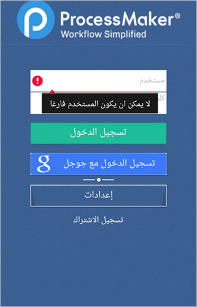
You also are able to type text from right to left in the login interface.

After logging to the ProcessMaker Mobile app, you see that your Inbox tray looks like the image below:

The navigation bar displays at the right side of the screen.

Moreover, when running a case, the Dynaform interface displays the text from right to left.

After submitting a case, the routing screen is converted to the Arabic interface.

And if mobile controls are included in the Dynaform, their interfaces also change to support right-to-left orientation.
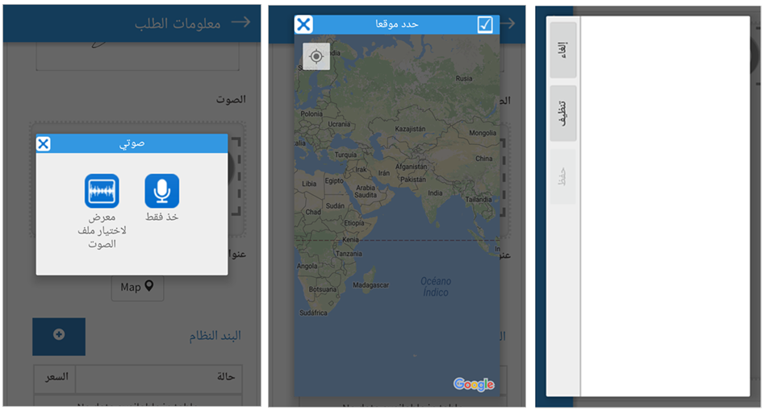
Grids in ProcessMaker Mobile RTL Language Support
Labels and icons of controls inside grids are changed to be displayed to the right. As well as the New button that adds a new row to the grid.

You are able to write from the right side to the left in each one of the grid rows.
Known Issues of ProcessMaker Mobile RTL Language Support
The Mobile RTL language support feature has some issues on certain devices. Please read the following known issues before using this feature:
- In Samsung Mini S4 devices with Android 4.4.2 there are problems rendering Dynaform elements. Sometimes the elements below a grid or even the grid itself are not visible in Dynaforms.
- In iOS 9.x devices, the WebView component has some issues scrolling in the RTL direction. For example, when you scroll to the left in a grid.
These known issues will be fixed in upcoming versions of the ProcessMaker Mobile app.
Synchronize Cases and Tables
ProcessMaker Mobile 2.1.0 and earlier calls this option Get offline cases, which downloads all cases that can be worked offline to your device. As of ProcessMaker Mobile 2.2.0, this option is called Synchronize cases and tables and also downloads offline PM Tables. This option is available if tasks enable the offline option. To learn more about offline cases and PM Tables, see Processmaker Offline Mobile.

Help
This option redirects you to the ProcessMaker wiki. Useful information about the mobile application can be found on this page. Tap Help, and the mobile web browser opens the wiki page.
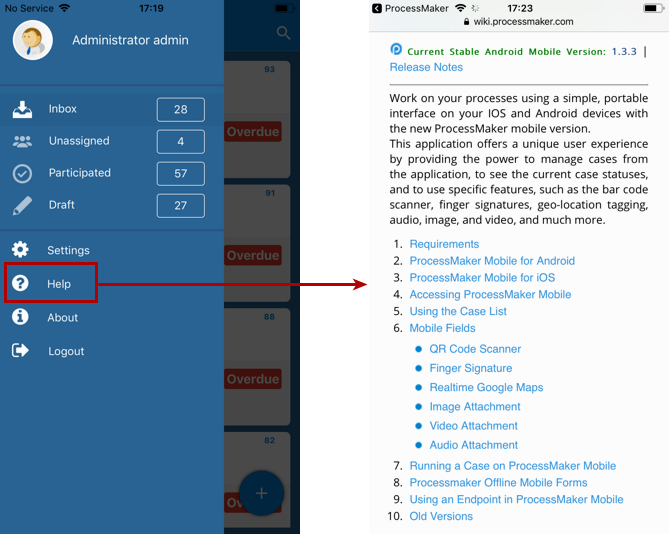
About
This option displays you the installed ProcessMaker Mobile version in your device. Go to the main menu by sliding the screen to the right. Tap the About option.
A window displays the version of the app and the build code. Tap OK to quit the window and to go back to the main screen.

Logout
Go to the main menu by sliding the screen to the right. Tap the Logout option. The Logout option will ask you if you are sure you want to quit, because all data that was not saved will be lost. Tapping OK quits the ProcessMaker app and go back to the main screen. Otherwise tap CANCEL.